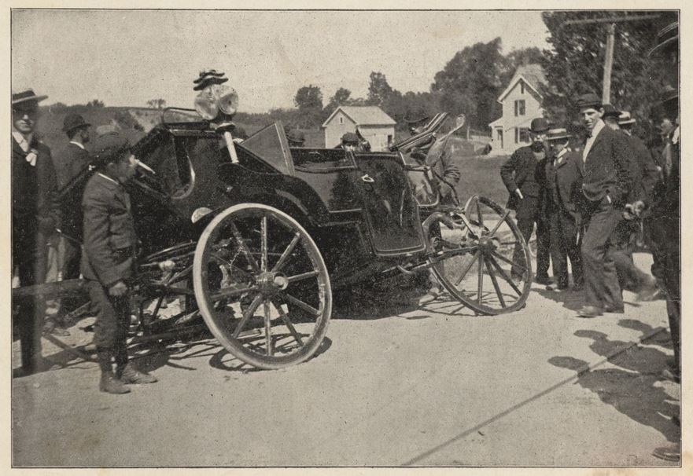
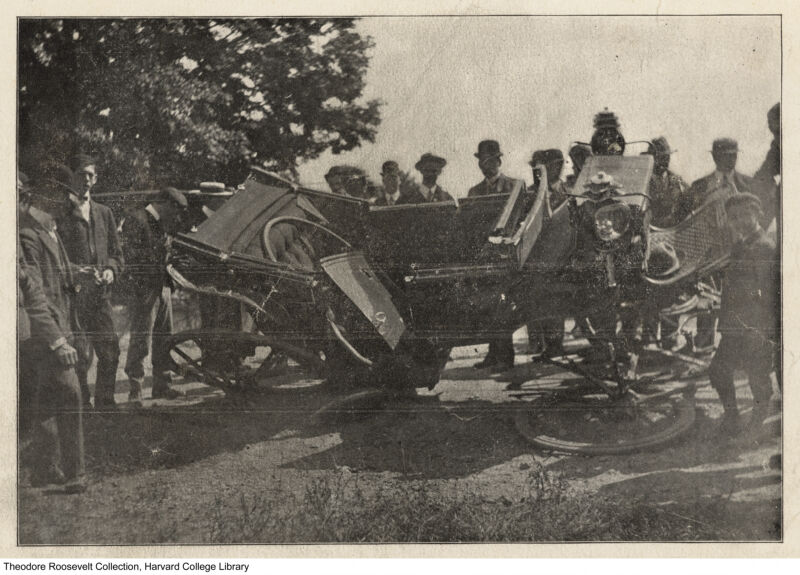

I was born and raised in the city of Pittsfield. Pittsfield is a city
located in Berkshire County, Massachusetts. It is the largest city in
Berkshire County, and the third-largest city in Western Massachusetts,
behind Springfield and Chicopee. Pittsfield is a relatively large city
with a population of 43,927 as of a 2020 census.
Pittsfield was first settled in 1752, and was incorporated as a town
in 1761. It was named after British politician William Pitt. In the
late 19th and early 20th centuries, Pittsfield was a thriving
industrial center, with a strong economy based on manufacturing,
including textiles, paper, and electrical equipment. The city also had
a vibrant cultural scene, with a number of theaters, museums, and
other cultural institutions.
Today, Pittsfield is still a major economic center in Berkshire
County, with a diverse economy that includes healthcare, education,
manufacturing, and tourism. The city is home to a number of notable
cultural institutions, including the Berkshire Museum, the Colonial
Theatre, and the Barrington Stage Company. Pittsfield is also home to
several parks and outdoor recreational areas, including the
11,000-acre Pittsfield State Forest.
The Incident
I’ve always thought of Pittsfield as a pretty average town, but I
learned differently one fine day. Apparently, President Theodore
Roosevelt got into a carriage accident here on September 3, 1902.
“While traveling through town in a horse-drawn carriage, the
president and his entourage crossed a set of trolley car tracks. To
their horror, a speeding electric interurban car rushing to beat the
president’s arrival downtown didn’t come to a stop and
knocked the carriage about forty feet.
“Roosevelt was jettisoned onto the pavement, landing on his face.
The Governor of Massachusetts, Winthrop Crane, escaped with only a
few bruises. But a Secret Service agent, William Craig, died a
horrible death, “ground under the heavy machinery of the car into an
unrecognizable mass.” (Craig, a Scottish immigrant and former
British soldier, was the first U.S. Secret Service agent ever killed
in the line of duty.) The trolley car’s motorman, Euclid
Madden, spent six months in jail for his recklessness that almost
cost the Commander in Chief his life.”

The stricken presidential carriage. Courtesy of Harvard University
Library.

The wrecked carriage, showing the complete demolition of the right
side of the vehicle. President Roosevelt sat in the rear seat at the
right, Governor Crane sitting beside him. (1902). Courtesy of
Harvard University Library.
Sources
“History of Pittsfield.” Pittsfield History,
www.cityofpittsfield.org/residents/history_of_pittsfield/index.php.
Accessed 16 May 2023.
Images.Hollis.Harvard.Edu,
images.hollis.harvard.edu/primo-explore/search?query=any%2Ccontains%2C
%22Theodore+Roosevelt+Collection%22+photographs+carriage&tab=defaul
t_tab&search_scope=default_scope&vid=HVD_IMAGES&lang=en_US&
offset=0#searchResultList. Accessed 16 May 2023.
Taylor, Stephen J. “When Theodore Roosevelt Was Hospitalized at
St. Vincent’s.”
Hoosier State Chronicles: Indiana’s Digital Newspaper
Program,
23 Aug. 2021,
blog.newspapers.library.in.gov/theodore-roosevelt-hospitalized-at-st-vincents/.